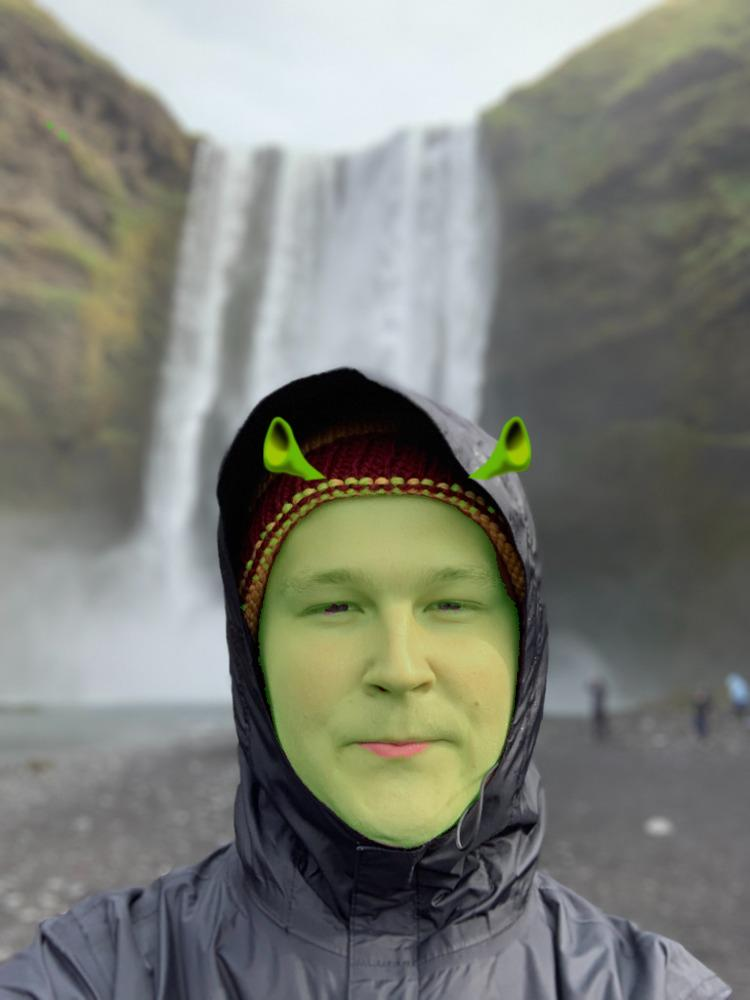

- 2022
- Svelte
- TypeScript
- AWS Lambda
- Canvas
A tool for Shrekification! Upload a pic of yourself and you'll get turned green.
First, you upload a picture. Then, when the "Shrekify" button is pressed, the image is shrunk (if needed, to avoid long processing times) and passed to an AWS lambda function, where it is read pixel by pixel to determine which ones to turn green. Afterwards, a simple face detection is done and Shrek ears are sized and placed using node-canvas. The image gets returned to the browser where it is displayed to be downloaded and/or shared.
A Shrekified Jesse:

I did not write the code for detecting when pixels are "skin-colored" - I just converted it to TypeScript from this CodePen. Nor did I write the code for detecting faces, that was copied and adapted for the newest version of Node.js Canvas from face-detect.
It took quite a few tries to get this "right" - and even then, it's pretty bad. Here are some decisions that I made along the way:
- At one point, this was actually a full-blown SvelteKit app with the Shrekification done on an API route, but hosting it was going to cost a pretty penny because of the long processing times.
- After moving it to a Svelte app built with Vite, I tried going the simple route (or so I thought) of doing all the processing in the browser. I knew it would freeze up the page, but I was going to let the user know of this ahead of time. Unfortunately, Safari on iOS auto-refreshes the page when it detects that it is frozen. Oh well.
- Enter web workers. This seemed super promising, as I'd avoid freezing the page! Woot! And it worked, but the overhead of using web workers blew up the perceived Shrekification time, so back to the drawing board.
- At this point, it seemed pointless to continue trying solutions in the browser, so I moved all the processing back to a Node.js environment... where it was to begin with. It was just a question of where to run this code. So, enter AWS Lambda functions. They give you a crazy high amount of free compute time, so it seemed like I was finally seeing the light! And I was. It took awhile to get everything configured just right, but that's how it is set up now. Thanks for reading!
Source code in the Github repository.